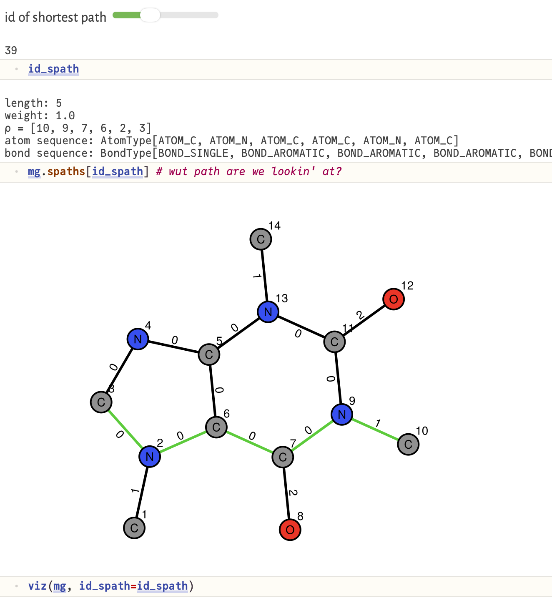

ShortestPathMolecularGraphKernels.jl
overview
a molecular graph represents a molecule as a simple graph (nodes: atoms; edges: bonds) where (a) nodes are "labeled" with the atomic species (H, C, N, etc.) of the atoms they represent and (b) edges are "labeled" with the type (aromatic, single, double, triple) of bond they represent.
a molecular graph kernel, loosely, scores the similarity of two molecular graphs. more formally, it corresponds with an inner product of two feature vectors of the molecular graphs. so, some mapping from a molecular graph to a vector representation, theoretically, underlies a molecular graph kernel.
generally, a shortest path molecular graph kernel characterizes each molecular graph by all shortest paths between every pair of nodes in the graph. it looks at the length of and the atom-bond label sequence along these shortest paths. we implement two variants of the shortest path graph kernel. given two input molecular graphs, the kernel counts pairs of corresponding shortest paths between them having the same:
- length and unordered pair of atom labels on the source and destination node
- length and exact atom-bond label sequence.
the exact sequence matching is much more expressive of molecular similarity, but it corresponds with a sparser underlying feature vector.
this Julia package, ShortestPathMolecularGraphKernels.jl:
- employs
MolecularGraph.jlto interpret a SMILES specification of a molecular structure as a molecular graph. - pre-computes and stores all shortest paths along the molecular graph and the atom-bond label sequences along them.
- computes the shortest path graph kernel between any two input molecular graphs, using either scoring criteria:
same (a) length and terminal node labels or (b) length and exact atom-bond label sequence.
- implements a multi-threaded computation of a Gram (molecule-molecule similarity) matrix for machine learning.
example
first, we show how to construct a molecular graph representing caffeine from its SMILES representation.
mg = MolGraph(
"CN1C=NC2=C1C(=O)N(C)C(=O)N2C", # SMILES
incl_hydrogen=false # include H atoms?
)next, we search for and store all shortest paths in this molecular graph and the atom-bond label sequences along them.
find_shortest_paths!(
mg, # the molecular graph
ℓ_max=typemax(Int) # the max path length
)we can visualize the molecular graph and explore any path on it:
id_spath = 39 # index of shortest path to look at
mg.spaths[id_spath] # shows all info abt this shortest path
viz(mg, id_spath=id_spath) # visualize graph and highlight shortest path
finally, we can compute the shortest path graph kernel between a pair of molecular graphs using either scoring criteria:
caf = MolGraph("CN1C=NC2=C1C(=O)N(C)C(=O)N2C") # caffeine
ibu = MolGraph("CC(C)CC1=CC=C(C=C1)C(C)C(=O)O") # ibuprofin
find_shortest_paths!.([caf, ibu])
# criterion: score using atom label set on src and dst nodes paired with length
shortest_path_graph_kernel(ba, ibu, exact_seq_matching=false) # 458.0
# criterion: score using exact atom-bond label sequence (implicitly, length, too)
shortest_path_graph_kernel(ba, ibu, exact_seq_matching=true) # 206.0for computing a Gram matrix, we have a multi-threaded implementation:
Threads.nthreads() # to see the number of threads I have available
# list of molecular graphs
mgs = MolGraph.(
[
"CN1C=NC2=C1C(=O)N(C)C(=O)N2C",
"O=C(O)c1ccccc1",
"CC(C)CC1=CC=C(C=C1)C(C)C(=O)O",
"CN1C=NC2=C1C(=O)N(C)C(=O)N2C"
]
)
# pre-compute shortest paths
find_shortest_paths!.(mgs)
# compute Gram matrix
K = compute_Gram_matrix(mgs, false) # K[i, j] = K[j, i]: similarity btwn molecular graphs i & jreferences
Kriege NM, Johansson FD, Morris C. A survey on graph kernels. Applied Network Science. 2020.
Borgwardt KM, Kriegel HP. Shortest-path kernels on graphs. In Fifth IEEE international conference on data mining. 2005.
Rupp M, Schneider G. Graph kernels for molecular similarity. Molecular Informatics. 2010.
docs
ShortestPathMolecularGraphKernels.MolGraph — Type
MolGraph(
smiles::String; incl_hydrogen::Bool=false, verbose::Bool=false
) -> MolGraphinterpret a SMILES representation of a molecular structure as a molecular graph.
relies on MolecularGraph.jl.
fields
smiles::String: the SMILES of the molecule representedincl_hydrogen::Bool: include H atoms?g::SimpleGraph: the graph (nodes: atoms; edges: bonds)atoms::Vector{AtomType}: list of labels (atom types) on the nodesbonds::Vector{BondType}: list of labels (bond types) on the edgesspaths::Vector{ShortestPath}: list of shortest paths
example
mg = MolGraph("CN1C=NC2=C1C(=O)N(C)C(=O)N2C") # caffeineShortestPathMolecularGraphKernels.AtomType — Type
AtomType(atomic_number::Int)an efficient UInt8 encoding of an atom type.
example
at = AtomType(6) # ATOM_CShortestPathMolecularGraphKernels.BondType — Type
BondType(bond_order::Int)an efficient UInt8 encoding of a bond type.
example
bt = BondType(0) # BOND_AROMATIC
bt = BondType(1) # BOND_SINGLE
bt = BondType(2) # BOND_DOUBLE
bt = BondType(3) # BOND_TRIPLEShortestPathMolecularGraphKernels.ShortestPath — Type
ShortestPath(
ρ::Vector{Int}, seq::Vector{UInt8}, ℓ::Int, w::Float64
) -> ShortestPatha data structure representing a shortest path between two nodes in a molecular graph.
fields
ρ::Vector{Int}: the path represented as an ordered sequence of node indicesseq::Vector{UInt8}: the atom-bond label sequence traversed along the pathℓ::Int: the length of the path (= # of hops)w::Float64: path weight, which ≂̸ 1.0 only when multiple degenerate
shortest paths exist between the same pair of nodes, used to normalize contributions.
note: under the hood, we store the shortest paths in a canonical order to avoid compute-intensive reversal for matching.
ShortestPathMolecularGraphKernels.find_shortest_paths! — Function
find_shortest_paths!(mg::MolGraph; ℓ_max::Int=typemax(Int)) -> nothingsearch for all shortest paths between all pairs of nodes in a molecular graph mg, up to and including of length ℓ_max. (uses Dijkstra's algorithm.) attach the list of shortest paths and their atom-bond label sequences to the molecular graph.
example
caf = MolGraph("CN1C=NC2=C1C(=O)N(C)C(=O)N2C") # caffeine
caf.spaths # empty array
find_shortest_paths!(caf)
caf.spaths # now contains the list of shortest pathsShortestPathMolecularGraphKernels.get_shortest_paths — Function
get_shortest_paths(spaths::Vector{ShortestPath}, u::Int, v::Int) -> Vector{ShortestPath}
get_shortest_paths(mg::MolGraph, u::Int, v::Int) -> Vector{ShortestPath}filter the list of shortest paths.
ShortestPathMolecularGraphKernels.shortest_path_graph_kernel — Function
shortest_path_graph_kernel(
mg₁::MolGraph, mg₂::MolGraph; exact_seq_matching::Bool=false
) -> Float64compute the shortest path molecular graph kernel between two input molecular graphs.
the kernel value is calculated by summing the similarity of all pairs of shortest paths between the two graphs.
if exact_seq_matching::Bool, we require exact matching of the atom-bond label sequence to note two common paths; otherwise, we note two common paths if the length and unordered pair of atom labels in the src and dst nodes are identical.
returns a numerical value representing the similarity between the two graphs.
ShortestPathMolecularGraphKernels.compute_Gram_matrix — Function
compute_Gram_matrix(mgs::Vector{MolGraph}, exact_seq_matching::Bool) -> Matrix{Float64}compute the symmetric Gram (kernel) matrix for a list of molecular graphs.
Each element K[i, j] in the resulting matrix K represents the similarity between molecular graph i and j according to the shortest path graph kernel.
implementation details
- symmetry: to reduce computation time by 50%, only the upper triangle is explicitly calculated, and values are mirrored to the lower triangle.
- parallelization: this function utilizes
Base.Threads.@threadsto distribute the outer loop iterations across available CPU cores.
ShortestPathMolecularGraphKernels.viz — Function
viz(mg::MolGraph; id_spath::Union{Int, Nothing}=nothing, nlabels::Bool=true)visualize a molecular graph and, if the index of a shortest path is provided, highlight that shortest path.
uses GraphMakie.jl under the hood and displays a plot in a Pluto.jl notebook.
example
mg = MolGraph("CN1C=NC2=C1C(=O)N(C)C(=O)N2C")
viz(mg, id_spath=39) # displays plot in Pluto